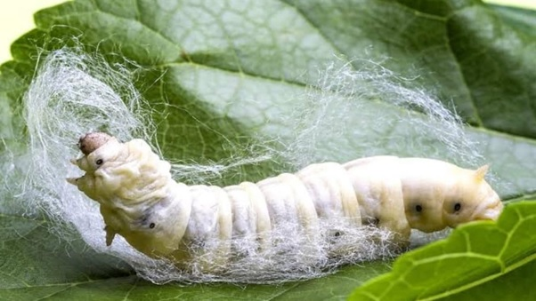

Dairy-Sericulture-Biogas
High-Value Diversification: Combining milk production with the "Queen of Textiles" (Silk).
1. Site Feasibility & Pre-requisites
🌿 Mulberry Garden
Loamy Soil.
You need dedicated land for Mulberry cultivation. The soil must be deep, fertile, and
well-drained. The leaves feed the silkworms.
🌡️ Micro-Climate
Cool & Humid.
Silkworms are sensitive. The rearing house requires a temperature of 24-28°C and humidity of
70-85%. Hot, dry regions need humidifiers.
👨🌾 Labor Intensive
Skilled Labor.
Unlike crops, silkworms need feeding 4 times a day during the rearing cycle. Ensure you have the
manpower available.
2. Infrastructure & Layout
The system links the dairy unit (waste source) to the mulberry garden (nutrient sink) and the rearing house (profit center).
🚧 Construction Specs
- Rearing House: Must be separate from the cattle shed to prevent fly contamination. Windows must have wire mesh to stop uzi flies.
- Biogas Unit: Connected to the cattle shed. The slurry outlet should lead directly to the Mulberry irrigation channel.
- Shoot Racks: Wooden or bamboo racks inside the rearing house to hold the silkworms.
3. The Nutrient Cycle
Biogas slurry creates lush mulberry leaves, which leads to higher quality silk cocoons.
Provide Dung
Liquid Fertilizer
Rapid Leaf Growth
Produce Silk Cocoons
4. Operational Calendar
Silkworm rearing happens in "Batches" (usually 5-6 per year). This fits perfectly between daily dairy tasks.
Apply Biogas slurry to Mulberry garden. Prune branches to stimulate fresh leaf growth.
Receive silkworm eggs (DFLs) from the grainage center. "Brush" (transfer) tiny larvae onto fresh leaves.
Feed larvae chopped mulberry leaves 3-4 times daily. Clean the bed (remove waste) every 2 days.
Worms stop eating and look for a spot to spin. Transfer them to "Mountages" (Chandrike) to spin cocoons.
Harvest the golden cocoons. Transport to the silk market immediately before the moth emerges.
5. Risks & Solutions
⚠️ HYGIENE ALERT
Silkworms are fragile. Do not enter the rearing house after visiting the cattle shed without washing hands/feet. Disinfect the house with Bleaching Powder before every batch.
| Problem | Solution |
|---|---|
| Uzi Fly Attack | Parasitic flies kill worms. Keep windows meshed. Use Uzi traps. |
| Low Leaf Yield | Soil nutrient deficiency. Increase Biogas slurry application. |
6. Economics
💰 High Value Cash Crop
- Silk Cocoons: Sold per KG. High market value compared to standard crops.
- Milk: Provides steady daily cash flow to support the farm while waiting for the silk batch.
📉 Input Reduction
- Fertilizer: Biogas slurry reduces fertilizer cost for Mulberry by 40%.
- Fuel: Biogas saves household cooking costs.
- Litter Reuse: Silkworm waste (litter) is high-protein feed for fish (if you have a pond).